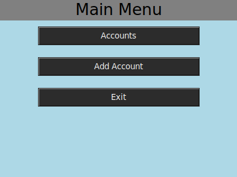
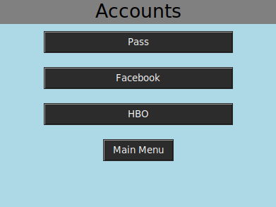

When the application is executed it checks to see if any AES-512 key files are present. If no key file is present it will assume that it is being run for the first time, and it will prompt you to set a master password. The master password is hashed using SHA and saved. On future runs you will need to enter the password matching this hash in order to access the AES key file that all application passwords were encrypted with.
Once authenticated into the application you can choose to view account information or add accounts. When viewing an account it will prompt if you would like to modify the credentials or delete that account as well.
